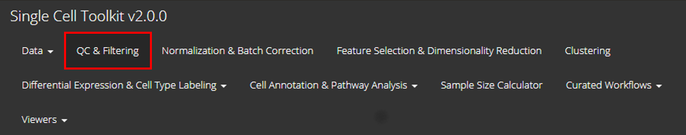
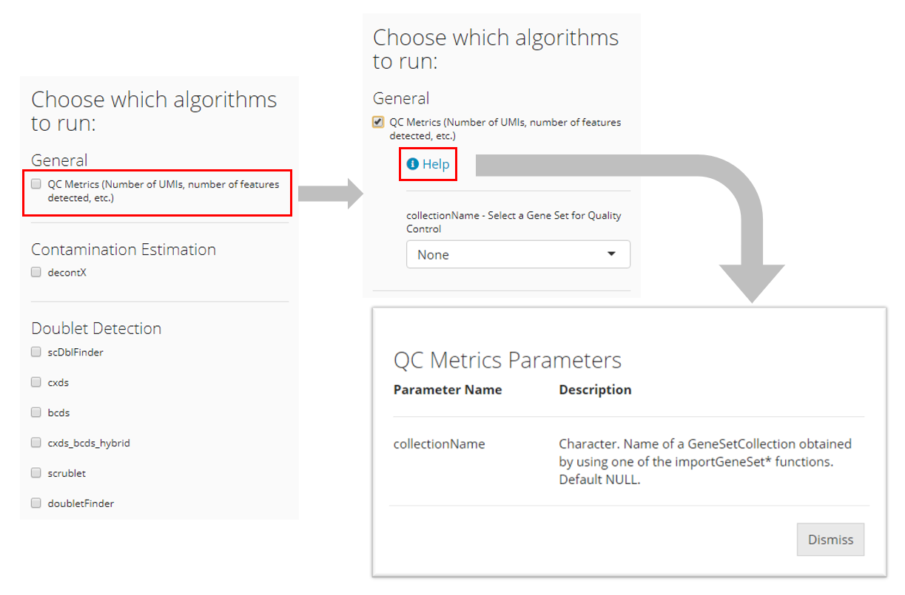
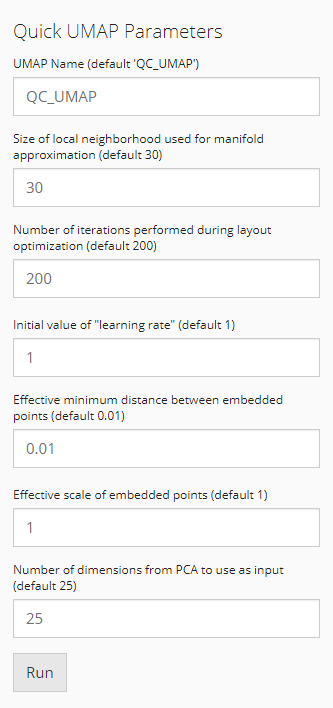
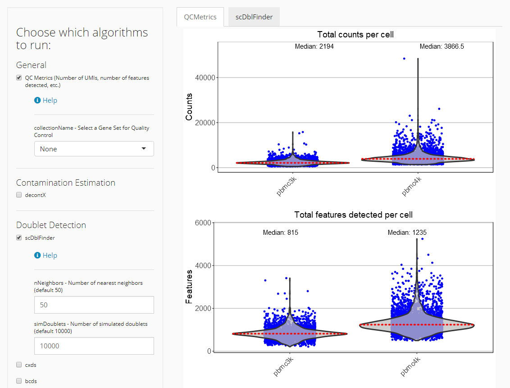
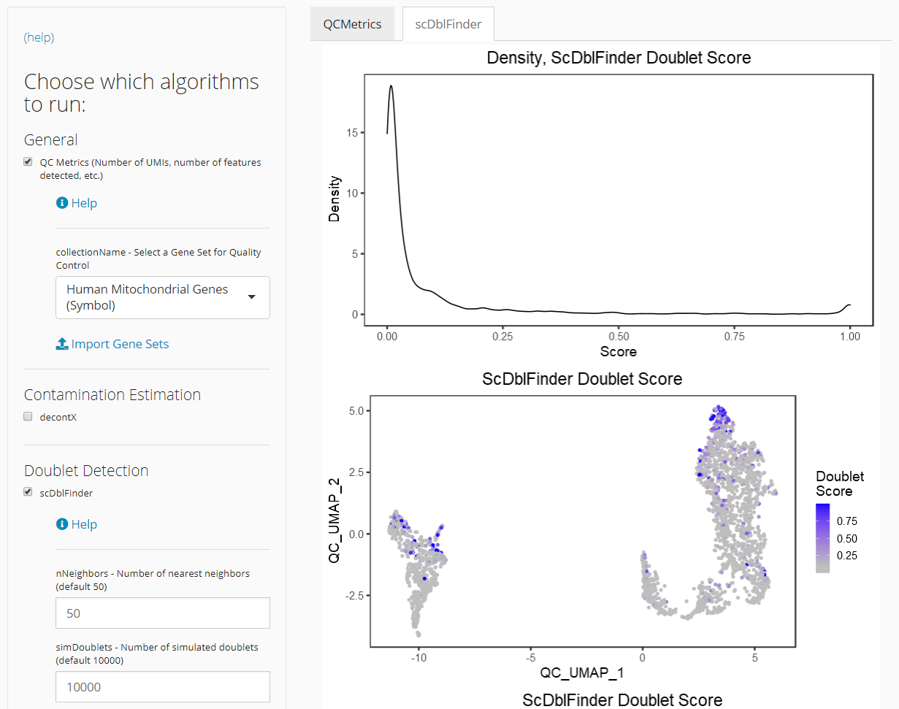

Introduction

Single Cell Toolkit (SCTK) provides Rshiny graphical user interface (UI) to perform quality control for the single-cell data that users have imported. User can open the SCTK Rshiny GUI by running singleCellTK() in Rstudio console. Users can navigate to quality control page through the tab that is highlighted in the screenshot above.
Here SCTK provides generic QC metrics, as well as contamination estimation by decontX, and doublet detection algorithms including scDblFinder, cxds, bcds, cxds_bcds_hybrid, doubletFinder, and scrublet. Note that “scrublet” is Python based. Users should have it configured before trying to apply it. User can refer to Install Python Dependencies section in the Installation page.
Import dataset
SCTK supports the importing of single-cell data from the following platforms: 10X CellRanger, STARSolo, BUSTools, SEQC, DropEST, Alevin, as well as dataset already stored in SingleCellExperiment object and AnnData object. To load your own input data to SCTK UI, please refer Importing Single-Cell Datasets under Interactive Analysis section in Import data into SCTK page for detailed instruction.
Select which algorithms to run
Users must check all algorithms which they would like to run at once. Rerunning the QC procedure will overwrite previous QC results. The parameters for the corresponding algorithms will show up as users check it. Users may adjust the parameters as needed. Detailed explanation for each parameter can be accessed via the “Help” button in the parameter region of each algorithm, as shown below.

Other settings before running
After checking off all the desired QC algorithms, users should also go through other settings including:
- Select assay: Choose the expression matrix that is used for quality control analysis. User needs to select the assay which stores the raw cell count matrix (unnormalized and unscaled).
- Select variable containing sample labels: QC steps will be performed for each sample separately. User needs to select the cell level annotation that labels the sample source of each cell.

A UMAP embedding will be calculated in the end when running SCTK QC workflow. It will be used across all QC algorithms for visualization of any scores or clusters. The parameters are already described in the UI. For more information, please refer to getUMAP() 
Having everything checked and ready, users can then press “Run” to start the procedure.
Plot the results
Once the QC analysis is finished, plots visualizing the QC metrics from each algorithm will automatically appear to the right of the QC algorithms’ panel in a tab set manner.
The QC metrics are generated sample wise. For example, in the “counts per cell” violin plot below, the results for sample “pbmc3k” and “pbmc4k” are plotted separately.

The visualization of certain algorithms (i.e density plot, UMAP plot) will be displayed in sub-tabs for each sample, if multiple sample are presented in users dataset and user specify correct sample labels when run QC step. The figure below demonstrates the visualization of doublet detection for “pbmc3k” and “pbmc4k” sample.

Filtering poor quality data
Once the QC analysis is finished, user can filter poor quality cells based on different QC metrics. The filtering step can be performed using UI. Please refer Interactive Analysis section in the Filtering page for more details.